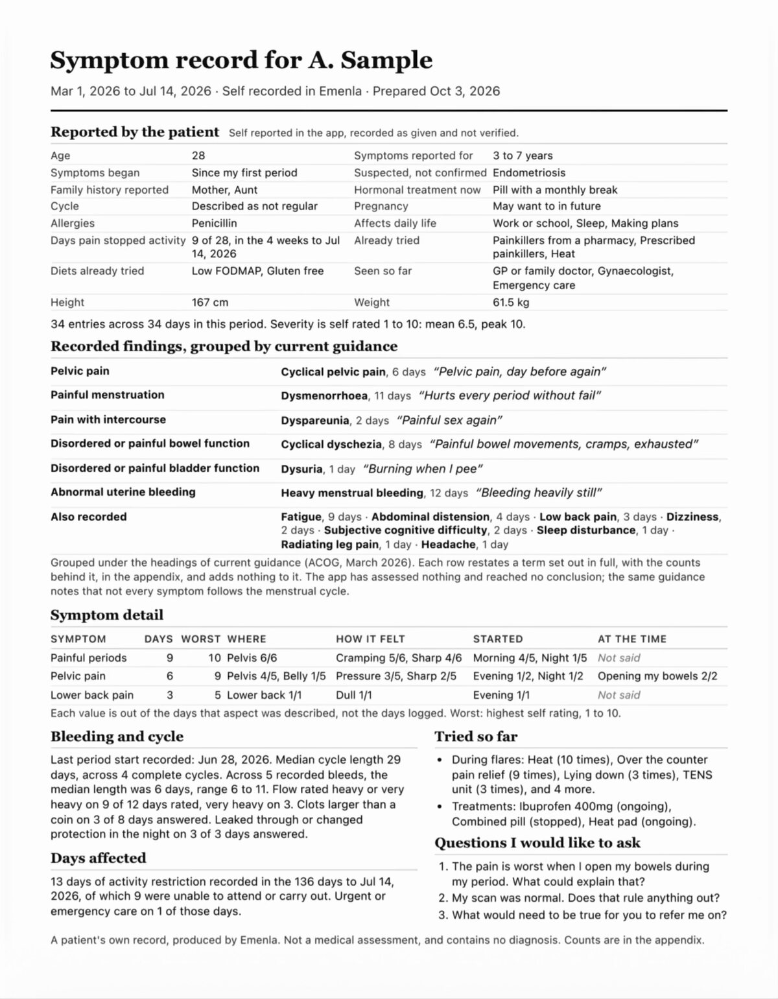
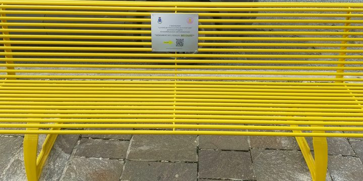

1690Described
First written down.
Daniel Schrön, a German physician, describes ulcers in and around the uterus that match what we now call endometriosis.
You’re not imagining it.
Pain that gets brushed off is still pain.
Turn what you feel into a clear conversation for your next appointment.
Emenla is an endometriosis symptom tracker for iOS.
Pain that gets brushed off is still pain. Emenla helps you keep a record of it, in your own words.
Turn what you feel into a clear conversation for your next appointment.
Emenla is an endometriosis symptom tracker for iOS.
Emenla is a record of endometriosis kept in your own words. Say what you feel, see it named in clinical language, count what you logged against your periods, and walk into the appointment with one clear page.
Tell it in your own words. We'll find the clinical name for it.
You write what you feel. Emenla matches it to the term a clinician would recognise, shows you where that term comes from, and keeps your own sentence printed right beside it. A clinician can check the match at a glance. So can you.
Emenla names symptoms in clinical language. It never names a condition.
Your words: It hurts when I go to the bathroom, especially during my period.
In clinical language: Dyschezia
pain on defecation
Your words: Period pain. Menstrual cramps.
In clinical language: Dysmenorrhoea
painful menstruation
ICD-10 N94.6
Your words: Painful sex.
In clinical language: Dyspareunia
pain during or after intercourse
ICD-10 N94.1
Every term is taken from the ESHRE 2022 and NICE NG73 guidelines. See the sources
Press and hold. Your sentence writes itself, and the clinical term appears beside it. Let go early and it un-writes.
In clinical language: Dysmenorrhoea
painful menstruation
ICD-10 N94.6
Kept on this phonePress and hold. Let go early and it un-writes.
The word "cyclical" is never taken from a sentence. Emenla only uses it after counting your logged days against your logged period starts. Concepts come from your words. Qualifiers come from your data.
Other apps turn a symptom log into a document for a clinician. What Emenla does differently is print your own sentence beside every clinical term, with its source, and refuse to say "cyclical" until it has counted.
Tap where it hurts, or say it out loud. A few words is a complete entry.
A page for your appointment, each clinical term with your own words beside it. Shown here with invented sample entries.
See the sample page
Counts of what you wrote down. No score, no streaks, no verdict on your day.
Tell it what happened in a sentence. Nothing is saved until you confirm it.
Write what you want to ask. Analyze offers a clearer version, and your words stay until you choose.
Also inside: detail for each symptom if you want it (where exactly, what it felt like, when it started), Learn, short plain-language reads you can also listen to, and Community, which for now is a preview: nothing in it is sent or received. Nutrition and Fitness are there too, in an earlier form than the rest.
Every app screen on this page is from iPhone. Emenla will come to iPhone Duo later, and its display opens wide enough for your record and your document side by side. The two Duo screens here show the app's launch screen, because this page shows only what is real.
Type or speak. "Bad cramps, back pain, stayed in bed" is a complete entry. Add severity and a period start if you want to. Skip everything else.
Counts from your own entries. Which days, how often, how bad, and how that lines up with your logged periods. Nothing scored, no streaks.
A one-page summary in clinical terms, with your own words printed beside each one, for you to bring to your appointment. What it is for is you feeling clear about your own body. Whether a clinician reads it is up to them.
Three centuries from the first description to a guideline that says your symptoms are enough.
The moments from 1690 to today, with the years that passed between them.
Daniel Schrön, a German physician, describes ulcers in and around the uterus that match what we now call endometriosis.
170 years pass.
Karl von Rokitansky in Vienna identifies tissue like the lining of the womb growing where it should not.
Sixty-seven more.
John Sampson coins the word endometriosis and proposes that backward menstrual flow seeds the tissue. Still the leading theory.
Another fifty-three.
The Endometriosis Association is founded in Milwaukee, the first patient-led organisation, and starts collecting women's own accounts.
ESHRE publishes its first guideline on diagnosing and treating endometriosis, updated in 2014 and 2022.

On 13 March 2014 the first Worldwide EndoMarch brought patients onto the streets of cities on several continents. March has been Endometriosis Awareness Month since 1993, and the colour it wears is yellow.
The UK guideline NG73 tells clinicians to suspect endometriosis when a woman reports pelvic pain, period pain that disrupts daily life, or pain during sex.
ACOG's guideline says a clinical diagnosis from symptoms, history and an examination is enough to begin treatment. Surgery is not required first.
Studies still put the delay between first symptoms and a diagnosis at four to eleven years. Emenla is for the years in between.
Told out loud: EndoTV, Living With Endo, Voices and Visions, NICE on its guideline and Get Loud, a TED talk.
Your entries are not uploaded to a server, not sold, and not shared with anyone. Emenla asks for an account so you can get back in, and the account holds your email address and nothing from your symptom record.
Free, always
Logging cannot be put behind a paywall. It happens on your phone, so there is nothing to lock. This is how Emenla is built, not a promise about the future.
$34.99 a year, or $6.99 a month
Your first summary is free. After that, one tier, bought through Apple's in-app purchase and refunded through Apple's process.
Short answers, in plain words. If yours is not here, ask.
Ask a questionEmenla is an iOS app for keeping a record of endometriosis symptoms. You log a day in a few words, typed or spoken, or by tapping where it hurts on a body map. The app counts what you wrote back to you: which days, how often, how bad, and how that lines up with the periods you logged. When you need it, it prints a one-page summary in clinical terms with your own words beside each one, to take to an appointment. Your record stays on the phone.
No, and it never will. Emenla names symptoms in clinical language and keeps your words beside each term. Whether those symptoms add up to a condition is a conversation for you and a clinician.
Your symptom record lives in the app's own database on your phone. Your symptoms, period dates, body map and notes are not uploaded, so there is no symptom data of yours sitting on someone else's machine. Emenla does need an account, and the account holds your email address and nothing from your symptom record. Speech recognition runs on the device and no audio is kept. The app has no analytics, no ads and no trackers; this site has no cookies and no third-party fonts. A few things can leave the phone, each only when you use the feature that sends it. Three go to OpenAI or Anthropic to be read, and only after you have said yes: a meal photograph, if you ask Nutrition to read it, which is never stored on a server, though the four nutrition figures it comes back as are kept with your account; what you write to the assistant, which never includes your record; and the questions you ask Analyze to make stronger, with your symptom names and a few facts the app counted. Each of those three has its own switch in the app. Beyond them, an appointment you add goes to your calendar, and an anonymous purchase status goes to Apple and RevenueCat if you buy the optional export. The privacy policy sets out each one.
Only where you turn it on. Three features use an AI model from OpenAI or Anthropic: the assistant, reading a meal from a photograph, and Stronger questions on the appointment page. Each asks you once, the first time you use it, says what it sends, and has its own switch in Settings. None of them sends your record, and none of them gives a diagnosis. The part that puts your words into clinical terms for your summary does not use them: it runs on your phone, from a fixed list of terms, each with its source.
You will lose them unless you export first. The account does not back up your record, so there is no cloud copy of it. Export before you switch.
No. There are no streaks anywhere in Emenla and there never will be. Reminders are optional and never leave your phone.
Not your flares. Once you have logged three period starts, Overview shows a range for when your next period might begin, worked out from the starts you logged and labelled as an estimate. If you turn it on in Settings, it can also show an estimated fertile window, counted from the same starts; it is off until you do, and it is not a method of contraception. Everything else is counted backwards from what you wrote.
In the wording, not in a claim about your health. The terms Emenla puts on the page follow the published endometriosis guidelines, ESHRE 2022, NICE NG73 and ACOG 2026, and every figure on this site is printed with the source next to it. What the app itself does is count what you logged. Emenla has not been studied in a clinical trial, and the science page says so as plainly as it says the rest. Read the science behind Emenla.
No. Emenla is an independent project built in Poland, with no clinic, brand, pharmaceutical or supplement sponsor behind it, and no advertising anywhere in the app or on this site. It recommends no products and sells nothing except the optional summary export. Nothing you write is sold or used for advertising, and your record stays on your phone.
Logging is free, always, and cannot be put behind a paywall because it happens on your phone: there is nothing to lock. Your first doctor summary is free. After that, the optional export is $34.99 a year or $6.99 a month, one tier, through Apple's in-app purchase.
An independent project built in Poland. Not a clinic, not a brand, and not funded by one. You can reach a person at hello@emenla.com.
Replies can take a few days. Please do not send symptoms, photos or medical details by email; Emenla is built so they never have to leave your phone.